Newpick
Political Bias Analysis Service | Spring 2025 | Course Project
Project Overview
Newpick은 소셜미디어 알고리즘으로 인한 확증 편향(Filter Bubble)과 정치적 양극화 문제를 해결하기 위해 기획된 모바일 뉴스 플랫폼입니다.
사용자의 뉴스 소비 패턴과 반응 데이터를 AI로 분석하여 12가지 유형의 정치적 성향 지표(B-E-O Model)로 시각화합니다.
거대 언어 모델(LLM)을 활용해 편향된 뉴스를 중립적인 사실(Fact) 위주로 요약하여 제공하며, 사용자가 자신과 반대되는 성향의 오피니언을 읽을
경우 리워드를 제공하여 확증 편향을 방지합니다. 우리는 기술이 사회적 갈등을 조장하는 것이 아니라, 사용자의 주체적인 해석 능력을 되찾아주는 도구가 되기를
바랍니다.
Research & Problem Context
현대의 뉴스 소비는 유튜브, 인스타그램 등 알고리즘 기반 플랫폼에서 주로 이루어집니다. 이는 사용자의 취향에 맞는 정보만 반복적으로 노출시켜 인지적 다양성을
제한하고 사회적 갈등을 심화시킵니다. 20대 사용자를 대상으로 한 'Personal Algorithmic Audit'과 인터뷰 결과, 사용자들은 팩트보다 댓글이나
썸네일의 '감정적 자극'에 반응하여 뉴스를 소비하는 경향을 보였습니다. 이를 통해 우리는 '감정 중심의 뉴스 소비'와 '해석
주체성의 상실'을 핵심 문제로 정의했습니다.
User Research
20대 뉴스 소비자의 행동 패턴을 분석하기 위해 설문조사와 심층 인터뷰를 진행했습니다. 사용자들은 알고리즘에 의해 편향된 정보에 노출되고 있었으며, '능동적인 뉴스 소비'에
어려움을 겪고 있음을 확인했습니다.
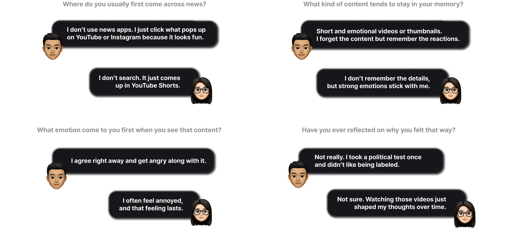
Design Strategy
확증 편향을 중재하기 위해 '넛지(Nudge)'와 '게이미피케이션' 요소를 활용했습니다. 사용자가 자신의 편향성을 인지하고, 자연스럽게 균형 잡힌 시각을 가질 수 있도록
유도하는 디자인 전략을 수립했습니다.
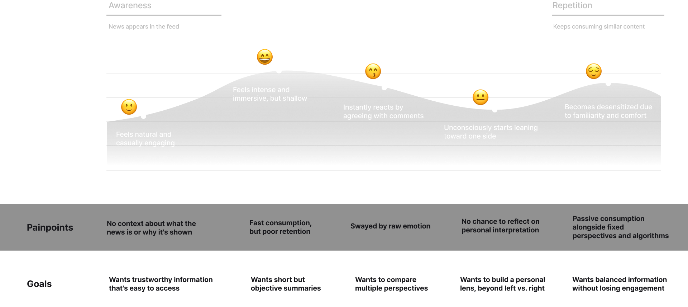
Concept Ideation
다양한 아이데이션 과정을 통해 '정치 성향 날씨 비유', '뉴스 체중계' 등 추상적인 편향성을 직관적으로 시각화하는 메타포를 도출했습니다. 이를 바탕으로 모바일 환경에
최적화된 인터페이스를 구체화했습니다.
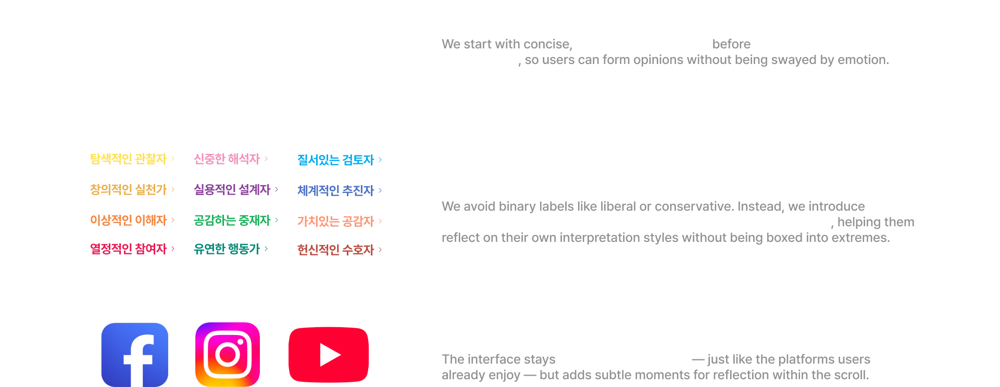
Architecture
정치적 편향성을 정량적으로 분석하기 위해 Python 기반의 3단계 병렬 분석 파이프라인을 구축했습니다. 수집된 텍스트 데이터는 전처리를 거쳐 벡터화되며,
세 가지 다른 분석 모델을 통과하여 최종 편향성 점수를 산출합니다.
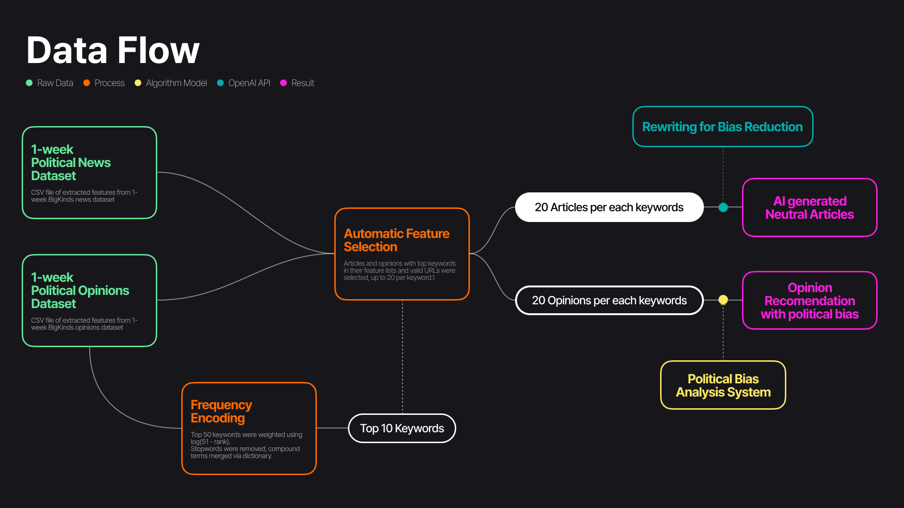
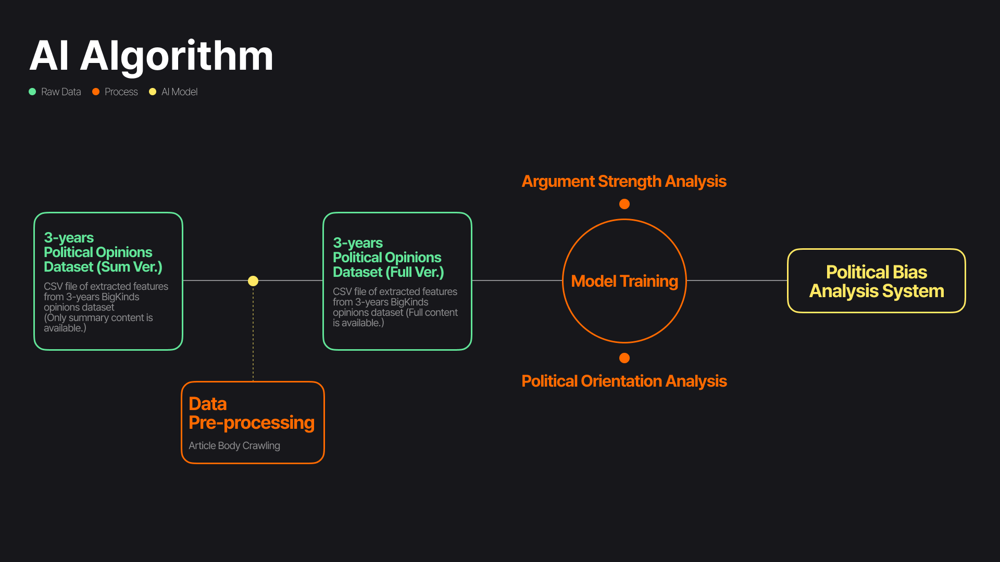
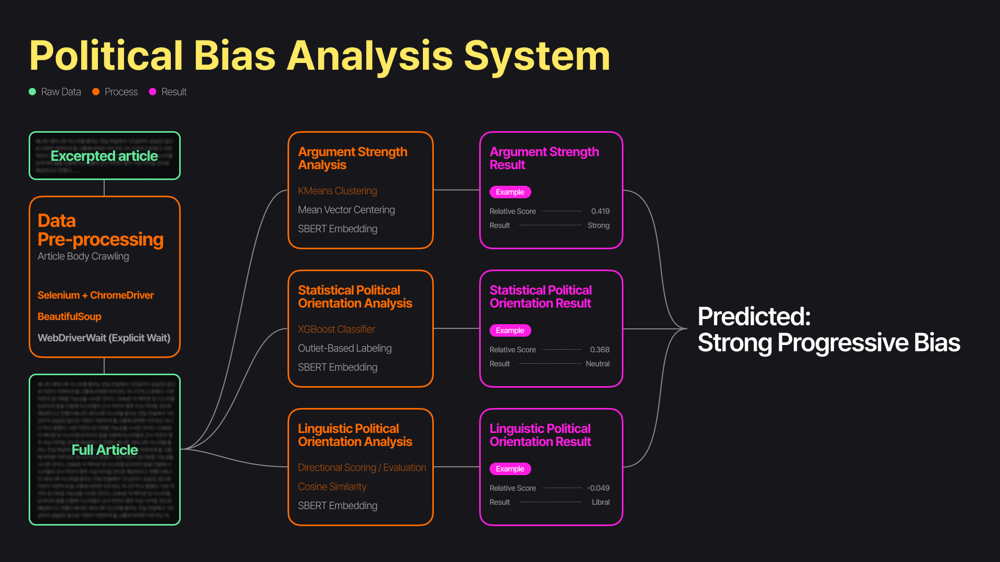
Design Overview
최종 디자인은 사용자의 편향성 분석 리포트와 중립 요약 뉴스 기능을 중심으로 구성됩니다. 직관적인 그래프와 리워드 시스템을 통해 뉴스를 '읽는 즐거움'과 '균형 잡힌
시각'을 동시에 제공합니다.
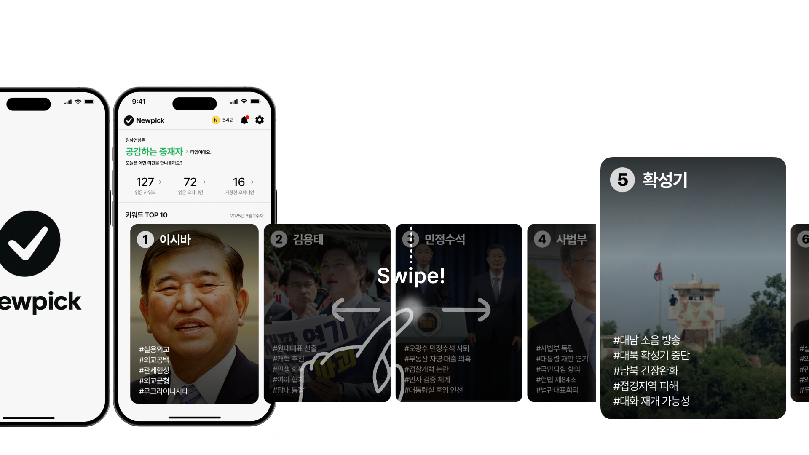
 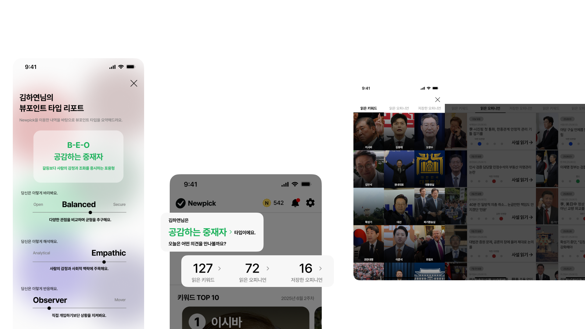
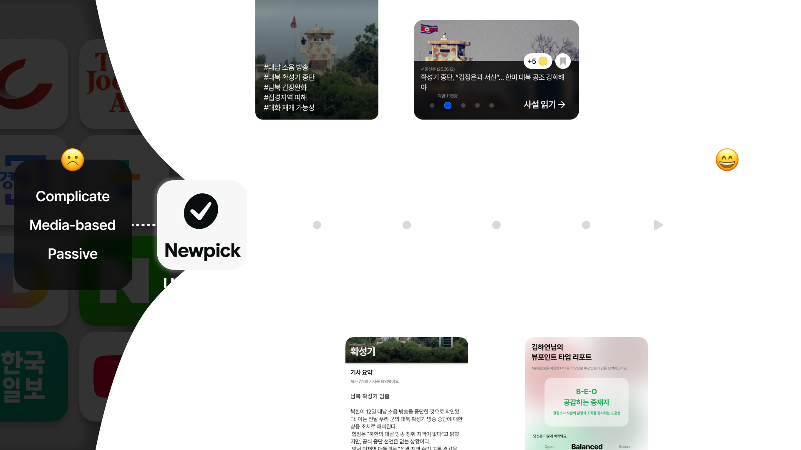
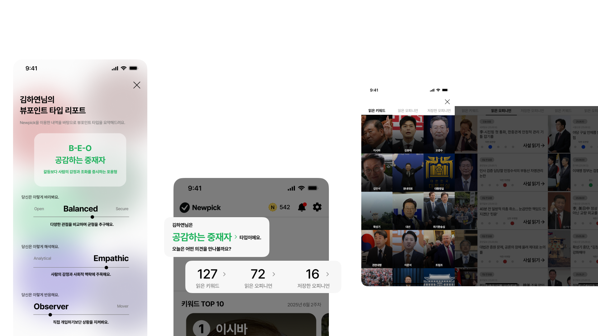
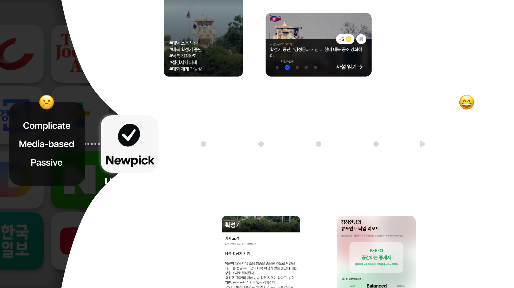
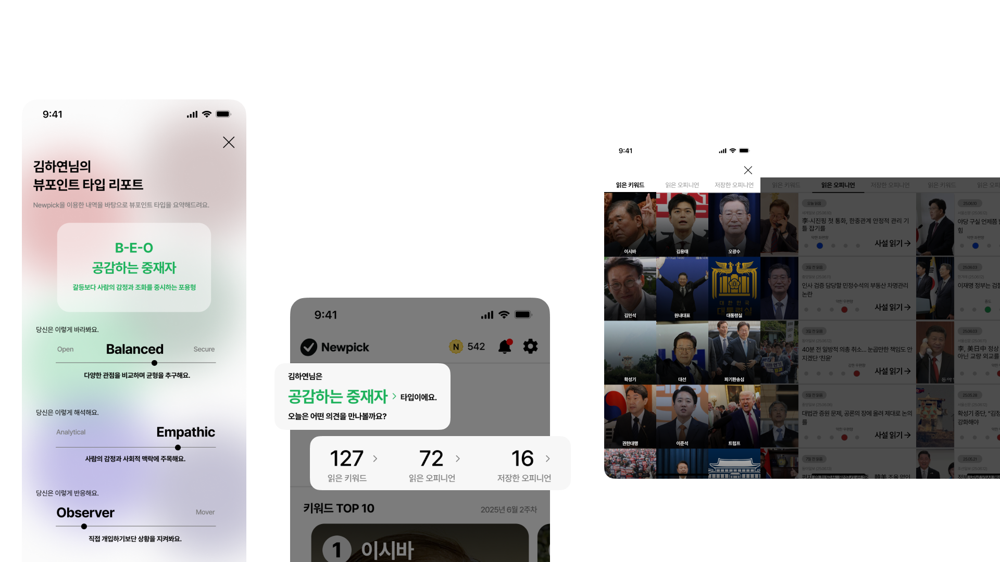
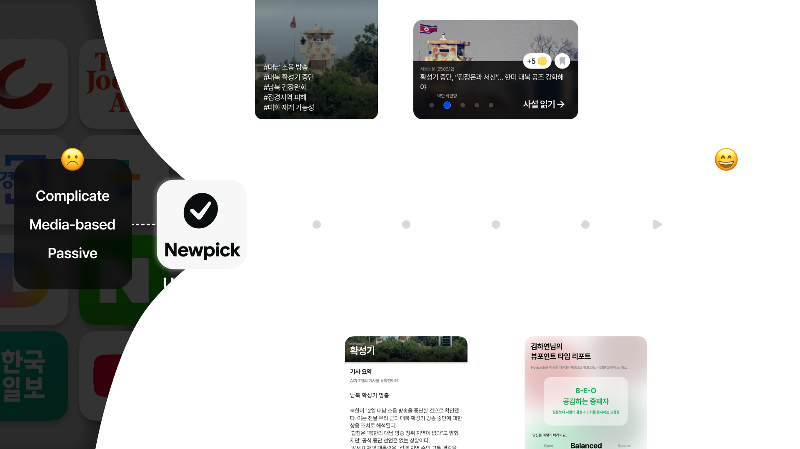
Reflection
본 프로젝트를 통해 AI 기술이 사회적 갈등 해결에 어떻게 기여할 수 있는지 고민했습니다. 특히 데이터 기반의 논리적 설계를 사용자 경험으로 풀어내는 과정에서 '설명 가능한
AI(XAI)'와 '윤리적 디자인'의 중요성을 깊이 이해할 수 있었습니다.
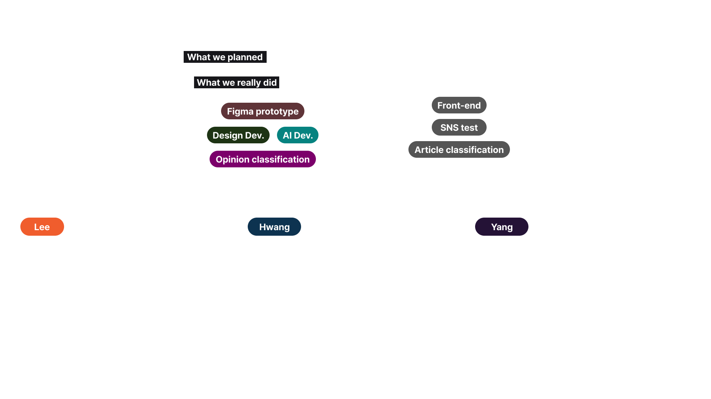
Technical Specifications
Languages
Python, Pandas, Selenium
AI/ML
OpenAI API (GPT-4), KoBERT/SBERT (Sentence Embedding), XGBoost
Classifier, K-Means Clustering
Data
Korea Press Foundation (BigKinds) - News & Opinion Data
(2022-2025)
My Role
AI & Data Modeling. 뉴스 데이터 분석 알고리즘 및 AI 로직 설계를 담당했습니다.
Credits
Team Members
Kyeongseok Lee, Junyoung Yang, Inhyuk Hwang
Course
Human-Centered AI and Design (2025 Spring Semester)